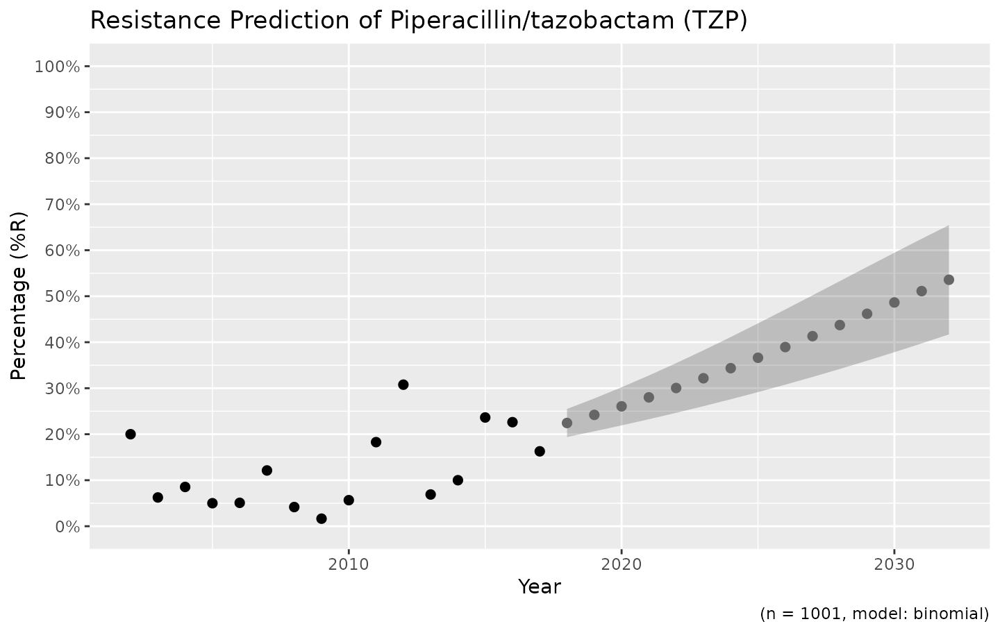
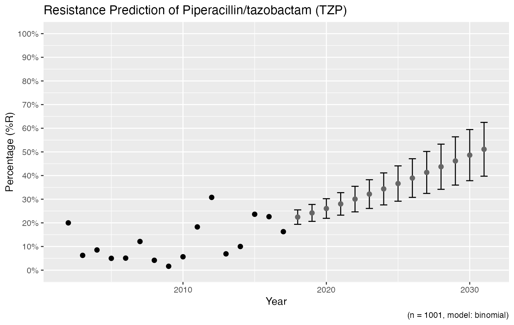
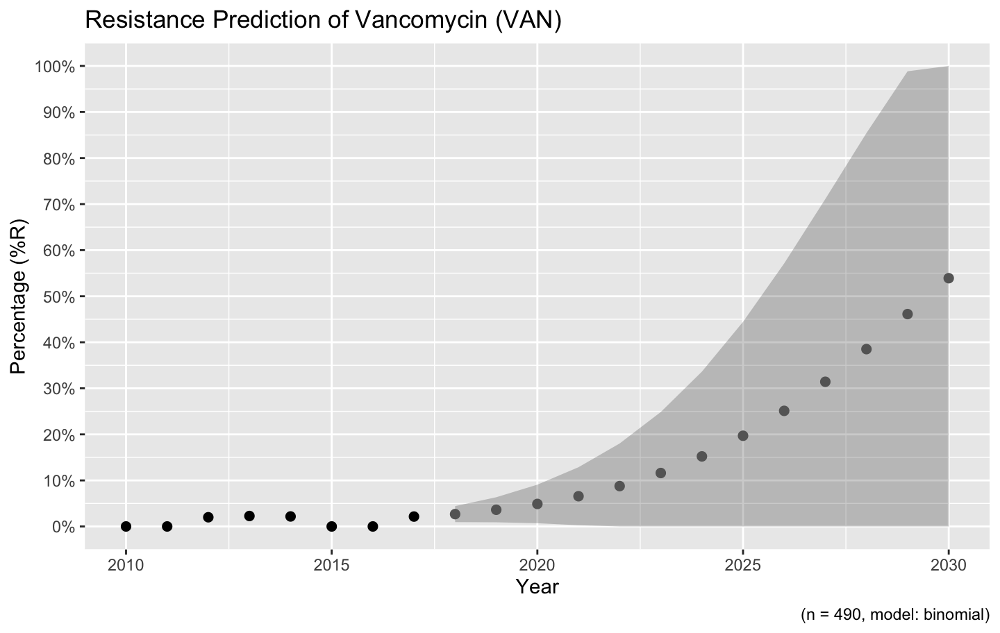
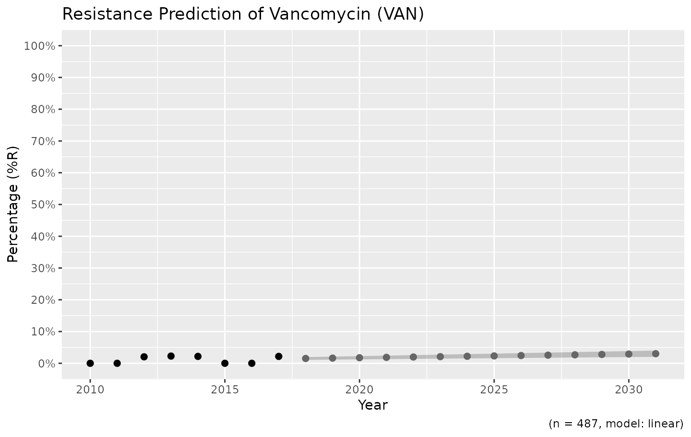

resistance_predict.RmdAs with many uses in R, we need some additional packages for AMR analysis. Our package works closely together with the tidyverse packages dplyr and ggplot2 by Dr Hadley Wickham. The tidyverse tremendously improves the way we conduct data science - it allows for a very natural way of writing syntaxes and creating beautiful plots in R.
Our AMR package depends on these packages and even extends their use and functions.
Our package contains a function resistance_predict(), which takes the same input as functions for other AMR analysis. Based on a date column, it calculates cases per year and uses a regression model to predict antimicrobial resistance.
It is basically as easy as:
# resistance prediction of piperacillin/tazobactam (TZP):
resistance_predict(tbl = example_isolates, col_date = "date", col_ab = "TZP", model = "binomial")
# or:
example_isolates %>%
resistance_predict(col_ab = "TZP",
model "binomial")
# to bind it to object 'predict_TZP' for example:
predict_TZP <- example_isolates %>%
resistance_predict(col_ab = "TZP",
model = "binomial")The function will look for a date column itself if col_date is not set.
When running any of these commands, a summary of the regression model will be printed unless using resistance_predict(..., info = FALSE).
# NOTE: Using column `date` as input for `col_date`.
#
# Logistic regression model (logit) with binomial distribution
# ------------------------------------------------------------
#
# Call:
# glm(formula = df_matrix ~ year, family = binomial)
#
# Deviance Residuals:
# Min 1Q Median 3Q Max
# -2.6817 -1.4087 -0.5657 0.9672 3.5728
#
# Coefficients:
# Estimate Std. Error z value Pr(>|z|)
# (Intercept) -224.39872 48.03354 -4.672 2.99e-06 ***
# year 0.11061 0.02388 4.633 3.61e-06 ***
# ---
# Signif. codes: 0 '***' 0.001 '**' 0.01 '*' 0.05 '.' 0.1 ' ' 1
#
# (Dispersion parameter for binomial family taken to be 1)
#
# Null deviance: 61.512 on 14 degrees of freedom
# Residual deviance: 38.692 on 13 degrees of freedom
# AIC: 95.212
#
# Number of Fisher Scoring iterations: 4This text is only a printed summary - the actual result (output) of the function is a data.frame containing for each year: the number of observations, the actual observed resistance, the estimated resistance and the standard error below and above the estimation:
predict_TZP
# year value se_min se_max observations observed estimated
# 1 2003 0.06250000 NA NA 32 0.06250000 0.05486389
# 2 2004 0.08536585 NA NA 82 0.08536585 0.06089002
# 3 2005 0.05000000 NA NA 60 0.05000000 0.06753075
# 4 2006 0.05084746 NA NA 59 0.05084746 0.07483801
# 5 2007 0.12121212 NA NA 66 0.12121212 0.08286570
# 6 2008 0.04166667 NA NA 72 0.04166667 0.09166918
# 7 2009 0.01639344 NA NA 61 0.01639344 0.10130461
# 8 2010 0.05660377 NA NA 53 0.05660377 0.11182814
# 9 2011 0.18279570 NA NA 93 0.18279570 0.12329488
# 10 2012 0.30769231 NA NA 65 0.30769231 0.13575768
# 11 2013 0.06896552 NA NA 58 0.06896552 0.14926576
# 12 2014 0.10000000 NA NA 60 0.10000000 0.16386307
# 13 2015 0.23636364 NA NA 55 0.23636364 0.17958657
# 14 2016 0.22619048 NA NA 84 0.22619048 0.19646431
# 15 2017 0.16279070 NA NA 86 0.16279070 0.21451350
# 16 2018 0.23373852 0.2021578 0.2653193 NA NA 0.23373852
# 17 2019 0.25412909 0.2168525 0.2914057 NA NA 0.25412909
# 18 2020 0.27565854 0.2321869 0.3191302 NA NA 0.27565854
# 19 2021 0.29828252 0.2481942 0.3483709 NA NA 0.29828252
# 20 2022 0.32193804 0.2649008 0.3789753 NA NA 0.32193804
# 21 2023 0.34654311 0.2823269 0.4107593 NA NA 0.34654311
# 22 2024 0.37199700 0.3004860 0.4435080 NA NA 0.37199700
# 23 2025 0.39818127 0.3193839 0.4769787 NA NA 0.39818127
# 24 2026 0.42496142 0.3390173 0.5109056 NA NA 0.42496142
# 25 2027 0.45218939 0.3593720 0.5450068 NA NA 0.45218939
# 26 2028 0.47970658 0.3804212 0.5789920 NA NA 0.47970658
# 27 2029 0.50734745 0.4021241 0.6125708 NA NA 0.50734745
# 28 2030 0.53494347 0.4244247 0.6454622 NA NA 0.53494347The function plot is available in base R, and can be extended by other packages to depend the output based on the type of input. We extended its function to cope with resistance predictions:
This is the fastest way to plot the result. It automatically adds the right axes, error bars, titles, number of available observations and type of model.
We also support the ggplot2 package with our custom function ggplot_rsi_predict() to create more appealing plots:


Resistance is not easily predicted; if we look at vancomycin resistance in Gram positives, the spread (i.e. standard error) is enormous:
example_isolates %>%
filter(mo_gramstain(mo, language = NULL) == "Gram-positive") %>%
resistance_predict(col_ab = "VAN", year_min = 2010, info = FALSE, model = "binomial") %>%
ggplot_rsi_predict()
# NOTE: Using column `date` as input for `col_date`.
Vancomycin resistance could be 100% in ten years, but might also stay around 0%.
You can define the model with the model parameter. The model chosen above is a generalised linear regression model using a binomial distribution, assuming that a period of zero resistance was followed by a period of increasing resistance leading slowly to more and more resistance.
Valid values are:
| Input values | Function used by R | Type of model |
|---|---|---|
"binomial" or "binom" or "logit"
|
glm(..., family = binomial) |
Generalised linear model with binomial distribution |
"loglin" or "poisson"
|
glm(..., family = poisson) |
Generalised linear model with poisson distribution |
"lin" or "linear"
|
lm() |
Linear model |
For the vancomycin resistance in Gram positive bacteria, a linear model might be more appropriate since no (left half of a) binomial distribution is to be expected based on the observed years:
example_isolates %>%
filter(mo_gramstain(mo, language = NULL) == "Gram-positive") %>%
resistance_predict(col_ab = "VAN", year_min = 2010, info = FALSE, model = "linear") %>%
ggplot_rsi_predict()
# NOTE: Using column `date` as input for `col_date`.
This seems more likely, doesn’t it?
The model itself is also available from the object, as an attribute: